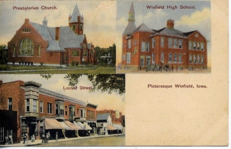

This Place Matters
by Judy Rawson, President of Winfield Historical Society
Winfield Beacon, Vol 128, Number 6, May 21, 2009
When asked to write about a place in Winfield that matters, I immediately thought of our Winfield Historical Society & Museum. It encapsulates all of Winfield. As President of our society since its inception, I'd like to tell you a little about us and hopefully inspire you to visit and appreciate similar efforts in your hometown.
Our beginning started back in 1996. As a member of our local Questers Club, I often mentioned that it would be nice if our town had a place where our local history and artifacts could be preserved. Several other Questers seemed to agree and encouraged me to pursue the idea. Laura Draper, who lived in Senator William Carden's former home, but was preparing to move, gave me several boxes of memorabilia of the senator that we found in her attic. They were given with the understanding that I had to get a museum or historical society organized within two years or the items were to be returned to the attic where they had been found.
In the fall of 1996 Margaret Kant and I put an article in our local paper for like-minded people to meet at the library. About six or seven came that first day and encouraged us to keep spreading the word and meet again. The next month twenty came and so it grew. Many of those original people are valued board members yet today and it couldn't happen without their dedication and hard work.
In the following months we incorporated; found a building to rent, the Masonic Temple, and began adding members. We are supported solely by memberships and donations. As word spread that we needed items relevant to Winfield our collections began. People were glad to have a place to share their memories and items from old businesses or people that use to live in Winfield. We get excited every time someone appears with a treasured box of "oldies" found when cleaning out a closet or old pictures that always start a conversation about remember when…
How fast our rooms have filled! Yet we still encourage more for new and different displays. We change our window display monthly, so when you next stroll down our main street, be sure to take a minute to see what's new at the museum.
We are open every Monday, 10 a.m. to noon or by appointment, just call the City of Winfield at 319-257-6661. Groups or tours are always welcome. We have a lot of information on hand if you're doing local research or genealogy. Bill Klopfenstein has written six booklets on Winfield, the school, churches, etc. These booklets are for sale at the museum.
Our displays include railroads, school room, printing press, original hose cart for the fire department, Senator Carden, dolls, quilts, many pictures of local businesses and organizations. Our basement is a recreation of Erickson's Toyland that was there in the 1950s and 60s and is filled with toys from that era.
Over the years we have presented many programs on a wide variety of topics. Our goal is to inform the community of our history and keep an open dialogue so that we continue to learn and share information.
While Winfield is a rural farming community, we have many surprising former residents. (Come to the museum and find out who.) Our lives are on such a fast pace. Things are changing faster than ever before in history. It is vital to have a place where the past is remembered, our former way of life is preserved, and we can learn from those who went before.
In 1851 the present site of Winfield was open prairie. It was used to feed deer, prairie chickens, and wolves. Now our local farmers help feed the world; that's an amazing story between then and now. We have much to share.
Please join our efforts, keep your local history alive for the next generation. Hope to see you at the museum or on our web-site: www.winfieldhistoricalsociety.com